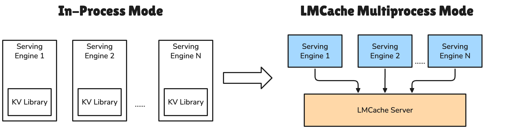
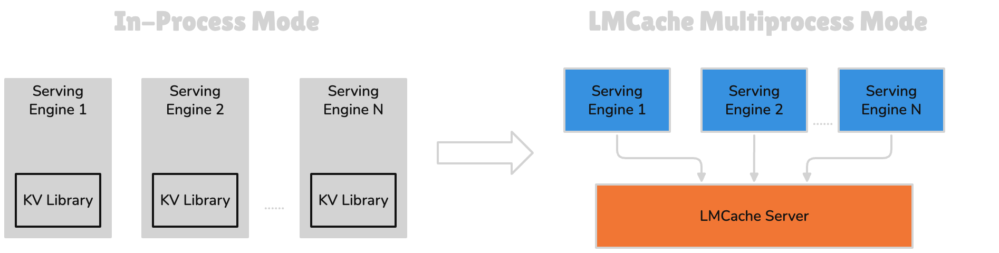
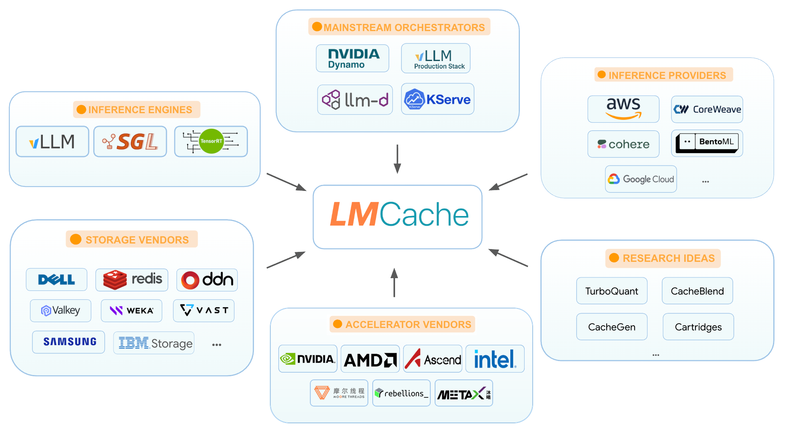

欢迎使用 LMCache！#
面向 LLM 推理的 KV Cache 管理层
备注
我们目前正在升级文档，以提供更好的指导和示例。某些章节可能仍在建设中，感谢您的耐心等待！
LMCache 是面向 LLM 推理的 KV Cache 管理层。它将 KV Cache 从临时状态转变为可复用的 AI 原生知识：可以持久存储、在多个服务引擎之间复用、通过可观测性栈进行监控，并可转换以获得更好的生成质量。因此，LMCache 能降低 TTFT（首 token 时间）并提升吞吐量，尤其适用于长上下文智能体、多轮对话以及知识增强（如 RAG）等工作负载。
LMCache 具有厂商中立性。它可以作为 KV Cache 层，接入多种主流开源服务引擎、推理框架、硬件平台、存储系统和基础设施提供商。因此，用户可以在不同的服务引擎和存储厂商之间灵活切换，同时继续复用已存储的 KV Cache。


主要特性#
引擎独立部署：LMCache 作为独立的守护进程运行，能够在推理引擎进程之外独立管理 KV cache。因此，即使推理引擎发生崩溃，KV cache 也不会随之丢失，避免了与推理引擎“同生共死”的问题。
持久化的分层 KV Cache 卸载与复用：将 KV Cache 从显存卸载到跨越 CPU 内存、本地存储和远程后端的分层存储体系中，实现跨请求、跨会话和跨引擎实例的复用，从而减少重复的 Prefill 计算并降低 TTFT。
生产级 KV Cache 可观测性：LMCache 提供丰富的 KV Cache 可观测性指标，包括典型的 Kubernetes 指标（健康监控、性能诊断）、KV Cache 专属指标（请求级和 token 级的前缀缓存命中、生命周期、请求级 KV Cache 性能）、管理指标（特定用户的使用情况）等。
可插拔的存储与传输后端：通过统一接口轻松集成远程存储和 KV 传输后端，实现跨存储提供商的 KV Cache 卸载与共享。通过该接口，LMCache 支持的存储后端包括 CPU RAM、本地磁盘（SSD）、Redis/Valkey、Mooncake、InfiniStore、兼容 S3 的对象存储、NIXL 和 GDS。
非前缀 KV 复用：通过复用 prompt 中任意位置的已缓存 KV 块，将 KV 复用扩展到前缀缓存之外。它借助 CacheBlend 选择性地重新计算部分 token，从而恢复生成质量。
PD 分离与 KV 传输：支持通过 NIXL 等传输层，经由 NVLink、RDMA 或 TCP 将 KV Cache 从 Prefill 工作节点传输到解码工作节点。
可插拔的 KV 转换：提供简洁的接口，让研究人员能够借助灵活的 SERDE 接口实现压缩、token 丢弃和自定义序列化。
LMCache 正在成为 LLM 推理生态系统中不可或缺的一层，并通过社区驱动的方式与服务引擎、推理框架、硬件厂商、存储系统和基础设施提供商集成：

最新动态#
[2026/05] 🔥 AMD MI300X 上的智能体工作负载基准测试（博客）。
[2026/04] 🔥 LMCache 全新多进程（MP）架构发布（博客）。
[2026/03] LMCache 亮相 GTC 2026（帖子）。
[2026/01] LMCache 多节点 P2P CPU 内存共享，从实验性功能走向生产（博客）。
更多
[2025/11] LMCache 携手 CoreWeave 为 Cohere 加速高效 LLM 推理（博客）。
[2025/10] LMCache 加入 PyTorch 基金会，Tensormesh 正式亮相（博客，PyTorch）。
[2025/09] NVIDIA Dynamo 集成 LMCache，加速 LLM 推理（博客）。
[2025/08] 🎉 LMCache GitHub star 数突破 5,000+（博客）。
[2025/08] LMCache 在首日即支持 gpt-oss（20B/120B）（博客）。
[2025/07] 借助 LMCache 和 Redis 实现更快的 LLM 推理和更低的响应成本（Redis 博客）。
[2025/07] LMCache 将其加速能力扩展到 vLLM V1 中的多模态模型（博客）。
[2025/06] LLM Production Stack 实现跨硬件：AMD、Arm 和 Ascend（博客）。
有关更多信息，请查看以下内容：
我们的论文：